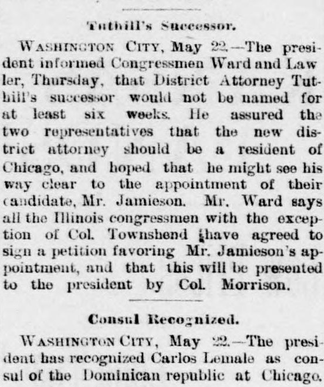
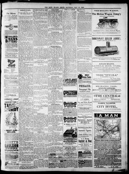

Washington City, May The president has recognized Carlos Demale as consul of the Dominican republic at ChicagoCiudad de Washington, mayo El presidente ha reconocido a Carlos Demale como cónsul de la República Dominicana en Chicago
The Argus. Rock Island, Ill., May 22, 1886. Page 3. Published by John W. Potter. A daily newspaper, 1885–1886.The Argus. Rock Island, Ill., 22 de mayo de 1886. Página 3. Publicado por John W. Potter. Periódico diario, 1885–1886. View the originalVer el original


See the full pageVer la página completaOn May 22, 1886, The Argus reported from Washington City that the President recognized Carlos Demale as the consul of the Dominican Republic at Chicago. Additionally, the newspaper noted that Illinois congressmen, with the exception of Col. Townshend, agreed to sign a petition favoring Mr. Jamieson's appointment to be presented to the president by Col. Morrison.El 22 de mayo de 1886, The Argus informó desde la capital federal de que el presidente de los EE. UU. reconoció a Carlos Demale como cónsul de la República Dominicana en Chicago. Consignó paralelamente el periódico que los legisladores de Illinois, con la salvedad del coronel Townshend, convinieron en suscribir una solicitud favorable al nombramiento del Sr. Jamieson para que el coronel Morrison la sometiera al dignatario.
FULL TEXT:TEXTO COMPLETO:
Tuthill's Successor.El sucesor de Tuthill.
WASHINGTON CITY, May 22.—The president informed Congressmen Ward and Lawler, Thursday, that District Attorney Tuthill's successor would not be named for at least six weeks. He assured the two representatives that the new district attorney should be a resident of Chicago, and hoped that he might see his way clear to the appointment of their candidate, Mr. Jamieson. Mr. Ward says all the Illinois congressmen with the exception of Col. Townshend have agreed to sign a petition favoring Mr. Jamieson's appointment, and that this will be presented to the president by Col. Morrison.CIUDAD DE WASHINGTON, 22 de mayo.—El presidente informó a los Congresistas Ward y Lawler, el jueves, que el sucesor del Fiscal de Distrito Tuthill no sería nombrado por al menos seis semanas. Aseguró a los dos representantes que el nuevo fiscal de distrito debería ser un residente de Chicago, y esperaba que pudiera ver claro su camino para el nombramiento de su candidato, el Sr. Jamieson. El Sr. Ward dice que todos los congresistas de Illinois con la excepción del coronel Townshend han acordado firmar una petición en favor del nombramiento del Sr. Jamieson, y que esta será presentada al presidente por el coronel Morrison.
Consul Recognized.Cónsul reconocido.
WASHINGTON CITY, May 22.—The president has recognized Carlos Lemale as consul of the Dominican republic at Chicago.CIUDAD DE WASHINGTON, 22 de mayo.—El presidente ha reconocido a Carlos Lemale como cónsul de la república dominicana en Chicago.
This collection gathers the coverage of the Dominican Republic in the American press, in the order it was published.Esta colección reúne la cobertura de la República Dominicana en la prensa estadounidense, en el orden en que se publicaron.